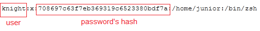
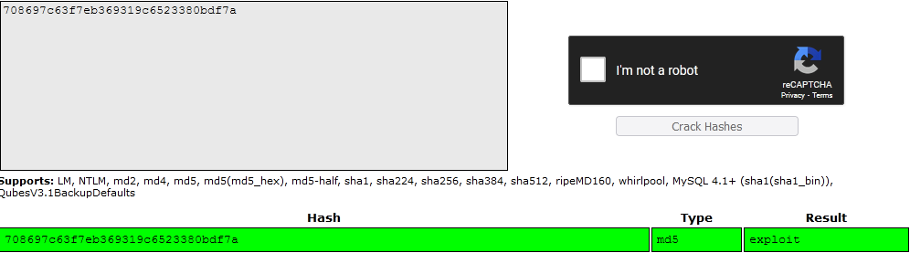

This was the first task on the ctf I solved. It was a warm up task, a good start in the cryptography serie. I know this is easy but I wanted to make things a bit clear.
The given file was containing this:
root:x:0:0:root:/root:/usr/bin/zsh
bin:x:1:1::/:/usr/bin/nologin
daemon:x:2:2::/:/usr/bin/nologin
mail:x:8:12::/var/spool/mail:/usr/bin/nologin
ftp:x:14:11::/srv/ftp:/usr/bin/nologin
http:x:33:33::/srv/http:/usr/bin/nologin
nobody:x:65534:65534:Nobody:/:/usr/bin/nologin
dbus:x:81:81:System Message Bus:/:/usr/bin/nologin
systemd-journal-remote:x:988:988:systemd Journal Remote:/:/usr/bin/nologin
systemd-network:x:987:987:systemd Network Management:/:/usr/bin/nologin
systemd-oom:x:986:986:systemd Userspace OOM Killer:/:/usr/bin/nologin
systemd-resolve:x:984:984:systemd Resolver:/:/usr/bin/nologin
systemd-timesync:x:983:983:systemd Time Synchronization:/:/usr/bin/nologin
systemd-coredump:x:982:982:systemd Core Dumper:/:/usr/bin/nologin
uuidd:x:68:68::/:/usr/bin/nologin
avahi:x:980:980:Avahi mDNS/DNS-SD daemon:/:/usr/bin/nologin
named:x:40:40:BIND DNS Server:/:/usr/bin/nologin
brltty:x:979:979:Braille Device Daemon:/var/lib/brltty:/usr/bin/nologin
colord:x:978:978:Color management daemon:/var/lib/colord:/usr/bin/nologin
cups:x:209:209:cups helper user:/:/usr/bin/nologin
dhcpcd:x:977:977:dhcpcd privilege separation:/:/usr/bin/nologin
dnsmasq:x:976:976:dnsmasq daemon:/:/usr/bin/nologin
git:x:975:975:git daemon user:/:/usr/bin/git-shell
mpd:x:45:45::/var/lib/mpd:/usr/bin/nologin
nbd:x:974:974:Network Block Device:/var/empty:/usr/bin/nologin
nm-openvpn:x:973:973:NetworkManager OpenVPN:/:/usr/bin/nologin
nvidia-persistenced:x:143:143:NVIDIA Persistence Daemon:/:/usr/bin/nologin
openvpn:x:972:972:OpenVPN:/:/usr/bin/nologin
partimag:x:110:110:Partimage user:/:/usr/bin/nologin
polkitd:x:102:102:PolicyKit daemon:/:/usr/bin/nologin
rpc:x:32:32:Rpcbind Daemon:/var/lib/rpcbind:/usr/bin/nologin
rtkit:x:133:133:RealtimeKit:/proc:/usr/bin/nologin
sddm:x:971:971:Simple Desktop Display Manager:/var/lib/sddm:/usr/bin/nologin
tss:x:970:970:tss user for tpm2:/:/usr/bin/nologin
usbmux:x:140:140:usbmux user:/:/usr/bin/nologin
junior:x:1000:1000:Root@ROOT:/home/junior:/bin/zsh
knight:x:708697c63f7eb369319c6523380bdf7a:/home/junior:/bin/zsh
I know that this is the output of "cat /etc/shadow" and this command shows all the information about user's passwords (Linux Systems) and I know that he is looking for knight's password so I need to search for a user named knight than his password, so as we can see here

I found the hash of the passwd so all i need is just find the real password with this hash so I went to
Crack Station to crack this password's hash

I found the password which is exploit so the flag is
KCTF{exploit}